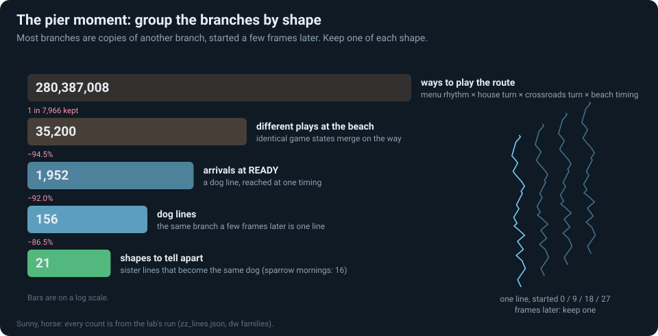
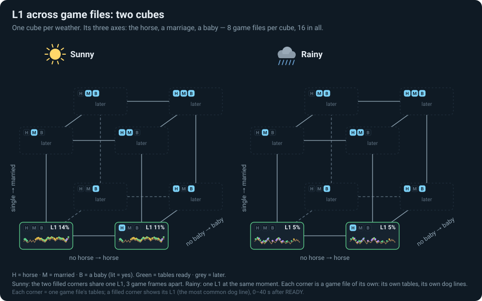

How it works: a leaf in a forest HM64 Power Nut Tool v32.26
The tool has to find one moment to press B among billions of possible game states. These pictures show how, each drawn from the lab's
own records. The README tells the same story at full length.
Every random thing in the game comes from one number. Picture all its possible histories as a forest: as wide as all its values, as tall as the game has run. The cast that lands the Power Nut is one leaf on one low branch.Why not search down from the leaf? Every fork could have come either way, so you end with odds, not an answer: the most common dog line comes from all 7 menu timings.Branches merge the way 1 + 2 and 2 + 1 both make 3. Once two routes reach the same random number with the same dog, everything after is the same; only the moment they got there can differ.So the tool grows the forest from the bottom. Every N64 starts the number at 0, and fast menus reach the house on only 7 different frames: 7 branches. On a sunny morning two of them show sparrows by the farm door.Sunlight is how fast a screen draws random numbers on its own (nothing to do with the game's weather). Count the numbers against the clock and each screen is a straight line on a slope. Sunny mornings are gentle, about one number per game frame. Rain is steep, 13 to 19 a frame, so rainy files need their own tables. On the pier the slope is steady, and two plays standing on the same line differ only in time (right).Nobody walks frame-perfect. A few frames of slack in the house, at the crossroads and on the beach split each branch three more times, and all of them end at READY.From the dog waking until you cast, nothing you do touches the numbers. The random number and the dog's state together (key : value) then have exactly one future. Two real plays that stop 14 frames apart turn out to be one branch.

That is why so few branches are left at the pier: most arrivals are a copy of another one, a few frames later. Keep one of each shape.A branch has no leaves until you cast. The cast bends it, and the new branch decides what bites. Two real casts one frame apart: one grows the Power Nut, the other a small fish. The strip marks every cast moment that grows a leaf, which is what the app's bars show.Keying what the dog does describes the shape of your branch. Four moves pick out L1.The tuner slides the app's copy of your branch to where your N64 is. You stand on the same ground as the tables, so time is the only thing left to match.

Every game file needs its own tables: two cubes, sunny and rainy, each with the horse × a marriage × a baby. Sunny with and without the horse share one L1, 3 game frames apart. Rainy with and without the horse share one L1 at the same moment, because the rain swallows the horse's two extra numbers on the farm. Married and baby come later.